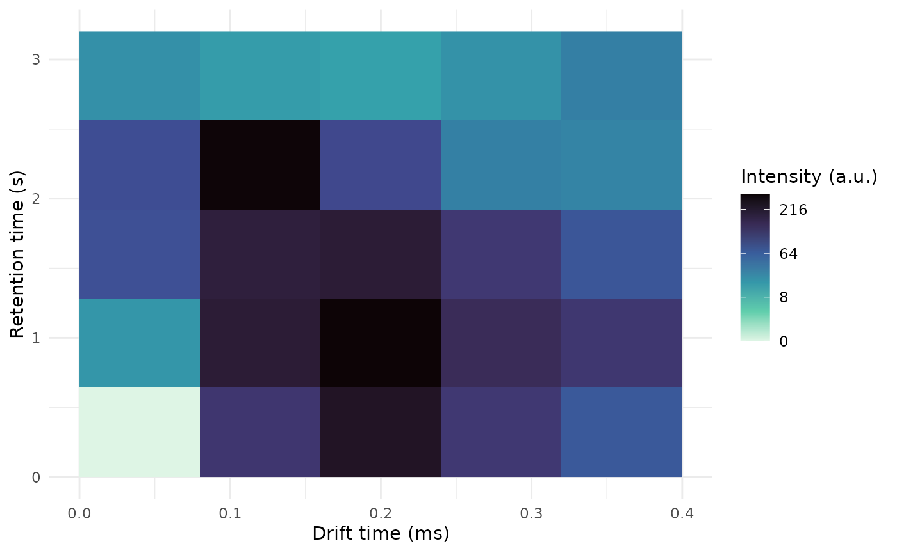
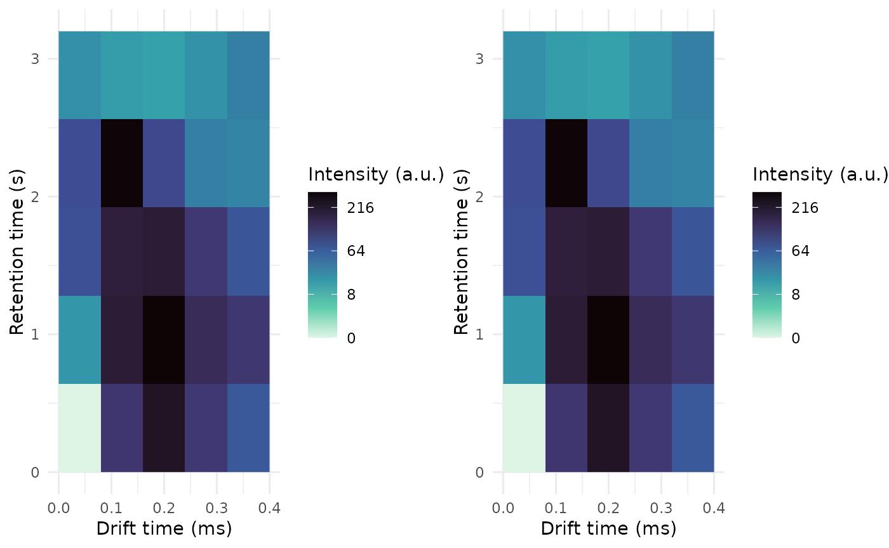

importing-custom-data-formats.RmdAbstract
This vignette shows how to import your custom data so it can be used with the GCIMS package. Data formats are typically vendor-dependant, and exports to CSV can have subtle differences.
This vignette aims to show you how to create a GCIMSDataset object from your own files, if those are not supported natively by the GCIMS package.
We do so, by showing how we can add support for importing CSV files.
The first step is to read the drift time, the retention time and the intensity matrices from your data file. Then we create a GCIMSSample object.
Once we have solved that, we wrap all our written code into a function, and we create the dataset.
To create a GCIMSSample object you need to have at least:
If your time vectors have different units, GCIMS will work, although you may see wrong labels in plots. We plan to include support for more units in the future.
Let’s imagine your sample is on a CSV file, with retention times on the first column, drift times on the first row, and the corresponding intensity values.
We will now create two samples: sample1.csv and sample2.csv
your_csv_file <- (
",0.0,0.1,0.2,0.3,0.4
0.0, 0, 20, 80, 84, 23
0.8,123,200,190,295, 17
1.6,230,300,200, 92, 15
2.4,120,150,120, 33, 22
3.2, 70,121, 74, 31, 34
")
write(your_csv_file, "sample1.csv")
write(your_csv_file, "sample2.csv")You can read it using read.csv() or the
readr::read_csv() function from the readr
package.
your_csv_file <- "sample1.csv"
csv_data <- read.csv(your_csv_file, check.names = FALSE)Once loaded, your data will look like:
csv_data
0.0 0.1 0.2 0.3 0.4
1 0.0 0 20 80 84 23
2 0.8 123 200 190 295 17
3 1.6 230 300 200 92 15
4 2.4 120 150 120 33 22
5 3.2 70 121 74 31 34
retention_time <- csv_data[[1]]
drift_time <- as.numeric(colnames(csv_data)[-1])
intensity <- as.matrix(csv_data[,-1])
rownames(intensity) <- retention_timeThe retention time:
retention_time
[1] 0.0 0.8 1.6 2.4 3.2The drift time:
drift_time
[1] 0.0 0.1 0.2 0.3 0.4The intensity matrix:
intensity
0.0 0.1 0.2 0.3 0.4
0 0 20 80 84 23
0.8 123 200 190 295 17
1.6 230 300 200 92 15
2.4 120 150 120 33 22
3.2 70 121 74 31 34With these three elements, we can create a GCIMSSample:
s1 <- GCIMSSample(
drift_time = drift_time,
retention_time = retention_time,
data = intensity
)
s1
A GCIMS Sample
with drift time from 0 to 0.4 ms (step: 0.1 ms, points: 5)
with retention time from 0 to 3.2 s (step: 0.8 s, points: 5)We are now ready to define a parser function that
returns a GCIMSSample given a filename:
GCIMSSample_from_csv <- function(filename) {
csv_data <- read.csv(your_csv_file, check.names = FALSE)
retention_time <- csv_data[[1]]
drift_time <- as.numeric(colnames(csv_data)[-1])
intensity <- as.matrix(csv_data[,-1])
rownames(intensity) <- retention_time
return(
GCIMSSample(
drift_time = drift_time,
retention_time = retention_time,
data = intensity
)
)
}Try it with a single sample:
s1 <- GCIMSSample_from_csv("sample1.csv")
s1
A GCIMS Sample
with drift time from 0 to 0.4 ms (step: 0.1 ms, points: 5)
with retention time from 0 to 3.2 s (step: 0.8 s, points: 5)You can check the intensity matrix and you can plot the sample to check that it behaves as expected:
intensity(s1)
rt_s
dt_ms 0 0.8 1.6 2.4 3.2
0 0 20 80 84 23
0.1 123 200 190 295 17
0.2 230 300 200 92 15
0.3 120 150 120 33 22
0.4 70 121 74 31 34
plot(s1)
Once you are satisfied with your function, prepare the phenotype data frame:
pdata <- data.frame(
SampleID = c("Sample1", "Sample2"),
FileName = c("sample1.csv", "sample2.csv"),
Sex = c("female", "male")
)
pdata
SampleID FileName Sex
1 Sample1 sample1.csv female
2 Sample2 sample2.csv maleAnd create the dataset object, passing your parser
function:
ds <- GCIMSDataset(
pData = pdata,
base_dir = ".",
parser = GCIMSSample_from_csv,
scratch_dir = "GCIMSDataset_demo1"
)
ds
A GCIMSDataset object:
- With 2 samples on disk
- No phenotypes
- No previous history
- Pending operations:
- read_sample:
base_dir: /__w/GCIMS/GCIMS/vignettes
parser: < function >
You now have a dataset ready to be used.
sessionInfo()
R version 4.2.2 (2022-10-31)
Platform: x86_64-pc-linux-gnu (64-bit)
Running under: Ubuntu 22.04.2 LTS
Matrix products: default
BLAS: /usr/lib/x86_64-linux-gnu/openblas-pthread/libblas.so.3
LAPACK: /usr/lib/x86_64-linux-gnu/openblas-pthread/libopenblasp-r0.3.20.so
locale:
[1] LC_CTYPE=en_US.UTF-8 LC_NUMERIC=C
[3] LC_TIME=en_US.UTF-8 LC_COLLATE=en_US.UTF-8
[5] LC_MONETARY=en_US.UTF-8 LC_MESSAGES=en_US.UTF-8
[7] LC_PAPER=en_US.UTF-8 LC_NAME=C
[9] LC_ADDRESS=C LC_TELEPHONE=C
[11] LC_MEASUREMENT=en_US.UTF-8 LC_IDENTIFICATION=C
attached base packages:
[1] stats graphics grDevices utils datasets methods base
other attached packages:
[1] cowplot_1.1.1 GCIMS_0.1.0 BiocStyle_2.26.0
loaded via a namespace (and not attached):
[1] tidyselect_1.2.0 xfun_0.37 bslib_0.4.2
[4] purrr_1.0.1 colorspace_2.1-0 vctrs_0.6.0
[7] generics_0.1.3 viridisLite_0.4.1 htmltools_0.5.4
[10] stats4_4.2.2 yaml_2.3.7 utf8_1.2.3
[13] rlang_1.1.0 pkgdown_2.0.7 jquerylib_0.1.4
[16] pillar_1.8.1 withr_2.5.0 glue_1.6.2
[19] BiocParallel_1.32.6 BiocGenerics_0.44.0 lifecycle_1.0.3
[22] stringr_1.5.0 ProtGenerics_1.30.0 munsell_0.5.0
[25] gtable_0.3.2 ragg_1.2.5 codetools_0.2-19
[28] memoise_2.0.1 evaluate_0.20 labeling_0.4.2
[31] Biobase_2.58.0 knitr_1.42 fastmap_1.1.1
[34] parallel_4.2.2 fansi_1.0.4 highr_0.10
[37] scales_1.2.1 BiocManager_1.30.20 cachem_1.0.7
[40] sgolay_1.0.2 S4Vectors_0.36.2 desc_1.4.2
[43] jsonlite_1.8.4 farver_2.1.1 systemfonts_1.0.4
[46] fs_1.6.1 textshaping_0.3.6 ggplot2_3.4.1
[49] digest_0.6.31 stringi_1.7.12 bookdown_0.33
[52] dplyr_1.1.0 rprojroot_2.0.3 grid_4.2.2
[55] cli_3.6.0 tools_4.2.2 magrittr_2.0.3
[58] sass_0.4.5 tibble_3.2.1 pkgconfig_2.0.3
[61] MASS_7.3-58.3 rmarkdown_2.20 R6_2.5.1
[64] signal_0.7-7 compiler_4.2.2